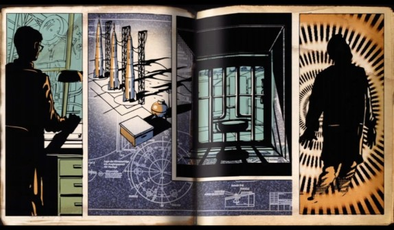

Maps
Kino der Toten
Kino der Toten (German: "Cinema of the Dead") is the fifth map in the Zombies Campaign, introduced in Call of Duty: Black Ops. The four original characters are playable. It has almost all the features from Der Riese, including the Bowie Knife, Teleporters, Pack-a-Punch Machine, Hellhounds and Monkey Bomb, although the Wunderwaffe DG-2 does not return. A new Wonder Weapon, the Thundergun, makes its debut, replacing the Wunderwaffe DG-2. It is the first map to have purchasable Cold War weapons, as well as the first map to have the new Gas Zombies. It is the third map to require the electricity to be turned on, and is the first Zombies map to not have the Mystery Box spawn in a fixed location. It is also available on the iOS version of Call of Duty: Black Ops Zombies. This map is set in an abandoned theater in Berlin, some time before 1963.
Ascension
"The risen dead have overtaken a Soviet cosmodrome and all Hell has broken loose. The countdown to the zombie apocalypse has begun."
Ascension is the eighth map in the Zombies game mode, included in the First Strike map pack. It takes place in an abandoned Soviet Cosmodrome. There are two new perks, Stamin-Up and PhD Flopper. Double Tap Root Beer doesn't return, but was initially set to appear. Space Monkeys have replaced the Pentagon Thief and Hellhounds. There is a new power-up introduced here, the Random Perk Bottle, which grants the player a random perk. Two new Wonder Weapons made their debut, the Gersch Device and the Matryoshka Doll, both of which are tactical grenades. The Bowie Knife is not in this map, as it is replaced by a Russian counterpart (only for aesthetic purposes), the Sickle which works exactly the same. The four original characters, Tank Dempsey, Nikolai Belinski, Takeo Masaki, and Edward Richtofen return. It is the second map where players can have zombies spawn next to them. It is the only map with the Lunar Lander, a utility that works similarly to the Teleporter. It is the fifth map where the electricity is required to be turned on. This map features Russian cosmonaut, scientist, military and civilian zombies. However, gas zombies do not return. This map also advances the zombie storyline much more than the previous Call of Duty: Black Ops map Kino der Toten. This map includes more radios similar to the ones in Der Riese and the Kassimir Mechanism Easter Egg which advances the story of Samantha Maxis as a demonic being. Characters from "Five" can be heard on this map by using the three red telephones, indicating that the two maps occur simultaneously. The map is based on Launch. Ascension is also available on the iOS version of Call of Duty: Black Ops Zombies.
Call of the Dead
"A shipwrecked crew of fearless explorers is hopelessly stranded in an abandoned Siberian outpost. Their dream of discovering the true origins of the Element 115 unravels into a hellish nightmare."
Call of the Dead is the ninth map in Zombies game mode included in the Escalation map pack. It is the first to feature real life celebrities as the playable characters, instead of "the original crew". The celebrities are Sarah Michelle Gellar, Robert Englund, Michael Rooker, and Danny Trejo. It also features George A. Romero as a special boss-zombie that spawns before the first round. The map is also the first to include regular Ziplines and the Flinger. There are two new Wonder Weapons, the V-R11 and the Scavenger. It also introduces a new Perk-a-Cola called Deadshot Daiquiri. The Original Characters Trapped is an Easter Egg in this map where the player must help the four 'original' characters escape to Paradise. The Wunderwaffe DG-2 makes a re-appearance as a Power-Up (called the Lightning Bolt), awarded after completing the Original Characters Trapped Easter Egg, however, it hasn't re-appeared in any maps so far. Call of the Dead is also available on the iOS version of Call of Duty: Black Ops Zombies and features the original characters instead of the celebrities.
Shangri-La
"A legendary shrine lost in an exotic jungle. Where the undead lurk within a treacherous labyrinth of underground caverns, deadly traps and dark secrets."
Shangri-La is the tenth map in Zombies game mode, included in the Annihilation map pack. The four original characters return as the playable characters after being teleported here from the Siberian facility in Call of the Dead. It is the first to feature the new Napalm Zombies, Shrieker Zombies and Zombie Monkeys. The map includes many new utilities, which include the Mine Cart, the Geyser, and the Water Slide. It also features a new equipment; the Spikemore and the new Wonder Weapon, the 31-79 JGb215. There is also a major Easter Egg in this map referred to as Eclipse, which rewards a player with the Focusing Stone, giving them every perk on the map permanently until the game ends, and is the only Easter Egg that can be completed more than once per game
Moon
"I believe that this nation should commit itself to achieving the goal, before this decade is out, of landing a man on the moon and returning him safely to the earth. (John F. Kennedy, 1961)"
Moon is the eleventh map in the Zombies game mode, included in the Rezurrection map pack. It starts off at Area 51, otherwise known as, No Man's Land, where for the second time, Hellhounds spawn with zombies after a certain amount of time. Teleporters return, and the main area takes place on a base on the moon. The four original characters return as playable characters. It features new Wonder Weapons, one of which is called the Wave Gun, which has a dual-wieldable function (dubbed the Zap Gun Dual Wield) and the Quantum Entanglement Device (QED), a new tactical grenade. The map also introduces the Phasing Zombies and Astronaut Zombies and sees the return of the Crawler Zombies and Hellhounds. The map also introduces a new Perk-a-Cola called Mule Kick and two new pieces of equipment called the P.E.S. and the Hacker. The map does not feature any traps, but does have a new utility: the Launch Pad. There is also a major Easter Egg in this map, referred to as Richtofen's Grand Scheme, which helps Richtofen gain control of the zombies.